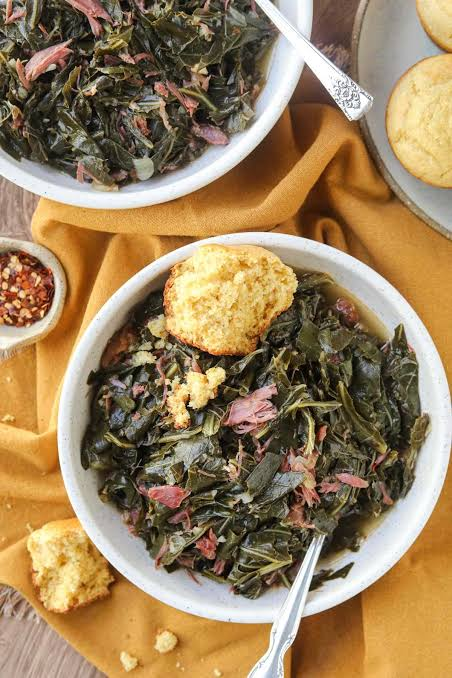

Southern-Style Collard Greens

Description
"Collard greens are slow-simmered with smoked ham hocks in broth until tender for a classic southern side just like mama used to make." -allrecipes.com
Ingredients
- 2 medium sweet onions, finely chopped
- 2 smoked ham hocks
- 4 cloves garlic, finely chopped
- 3 (32-ounce) containers chicken broth
- 3 (1-pound) packages collard greens, trimmed
- ⅓ cup apple cider vinegar
- 2 tablespoons white sugar
- 1 ½ teaspoons salt, or to taste
- ¾ teaspoon ground black pepper, or to taste
Steps
- Gather all ingredients.
- Combine onions, ham hocks, and garlic in a stockpot; add chicken broth and simmer over medium heat until meat is falling off the bone, 1 to 2 hours.
- Stir collard greens, vinegar, sugar, salt, and pepper into the broth mixture; cook until greens have reached desired tenderness, about 2 hours.
- Serve and enjoy.
Home